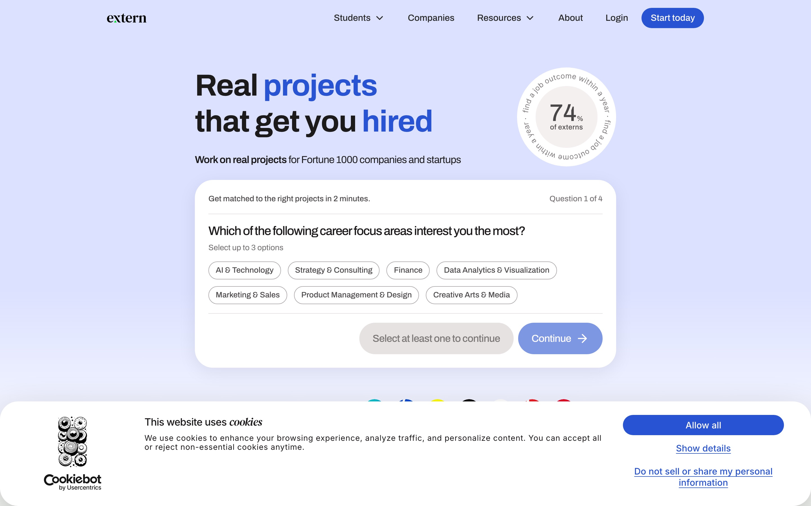
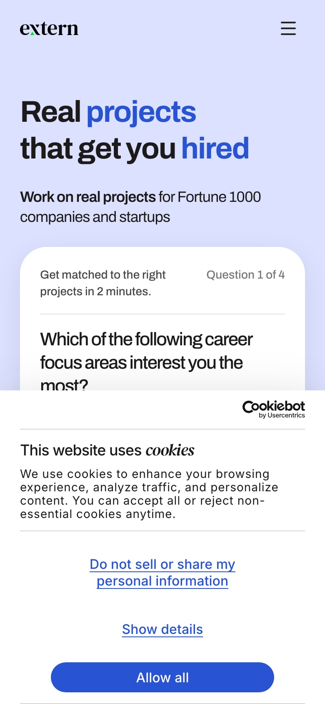
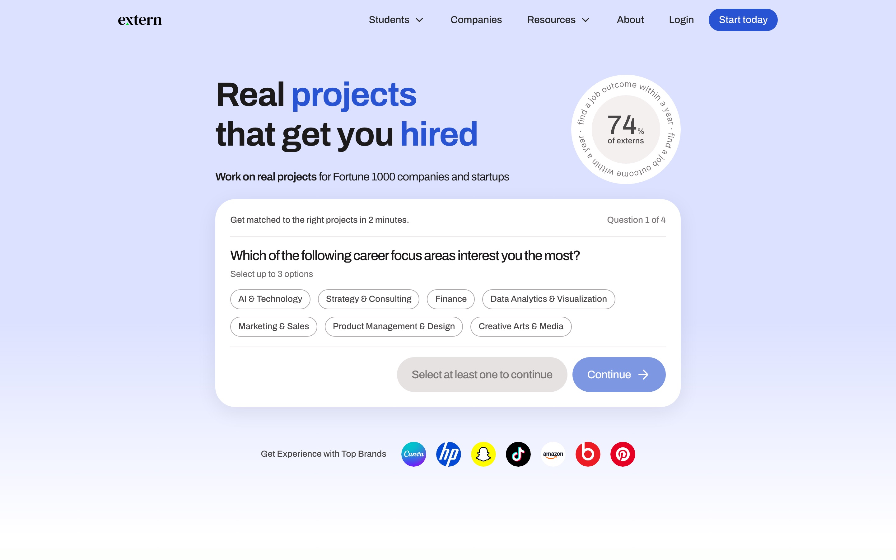
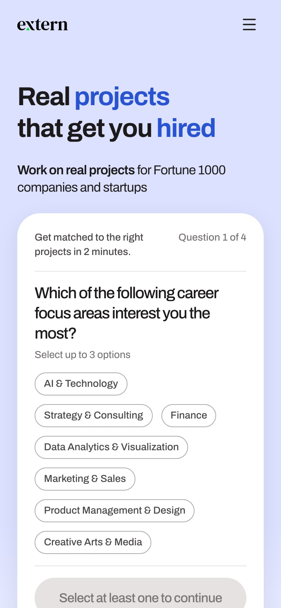

Each option is drawn to scale on the live Extern homepage (captured Oct 13, quiz arm) at desktop 1440px and phone 390px. Copy, buttons and footprint are what change. The legal mechanics stay the same across all ten and are listed at the bottom.
Prepared by Jay for Matt, Dishita and Vinny U.Review by Thu Oct 15Feedback: reply in Slack with the option number and what you'd change.
Baseline
Today's banner, as a US visitor sees it
45% of the phone screen

Desktop 1440. Banner height 186px, Cookiebot logo on the left.

Phone 390. Banner height 376 of 844px. "Do not sell or share" is the decline button.
The decline button is literally "Do not sell or share my personal information." That is Cookiebot's CCPA mode applied to every region.
Four elements compete on the first layer: title, paragraph, CCPA link, Show details, Allow all, plus the vendor logo.
Generic copy: "enhance your browsing experience" says nothing about Extern.
Covers the quiz CTA on the phone. The thing the page exists to do sits under the banner.
Option 1
Minimal bar
Recommended starting point

Extern uses cookies to understand how people use the site and to measure our ads. If you decline, only the cookies the site needs to work stay on.
ManageCookie policy
Desktop: slim full-width bar, about 80px.

Extern uses cookies to understand how people use the site and to measure our ads. If you decline, only the cookies the site needs to work stay on.
ManageCookie policy
Phone: bottom sheet, about 22% of the screen.
Copy says only what the banner controls: site analytics and ad measurement. Nothing about personalization or partners.
Two equal buttons. Accept and Decline, same size, same weight. California's rules require the no to be as easy as the yes.
Manage opens Cookiebot's existing details layer. Nothing is removed from the user, it is just one tap away instead of on the first screen.
Halves the phone footprint and uncovers the quiz CTA.
Build: Cookiebot dashboard copy change plus a custom CSS block. No app release.
Option 2
Compact card with the Extern wordmark
extern.
We use cookies to see what helps students and to measure our ads. Decline keeps only what the site needs to run.
Manage cookiesCookie policy
Desktop: 380px card, bottom-left. The page stays fully visible.
extern.
We use cookies to see what helps students and to measure our ads. Decline keeps only what the site needs to run.
Manage cookiesCookie policy
Phone: bottom sheet, about 24% of the screen.
Our mark instead of theirs. Answers Matt's "we're advertising for Cookiebot" directly.
Card, not bar, on desktop. Reads as part of the site. Leaves the hero and nav untouched.
"What helps students" ties the ask to why Extern exists. Still a true description of analytics.
Slightly taller on phone than Option 1 because of the wordmark line.
Option 3
One-liner
Smallest footprint with a real choice
Cookies help us see what's working on Extern and measure our ads. Okay with that?
Manage
Desktop: one line, about 62px.
Cookies help us see what's working on Extern and measure our ads. Okay with that?
ManageCookie policy
Phone: about 17% of the screen.
Conversational ask. A question invites an answer. Most of today's 60% never answer.
Drops the decline explanation. What decline does lives in Manage and the policy. Check with Matt whether that is enough disclosure.
Lowest height of the options that keep Accept and Decline side by side.
Risk: short copy can read as casual on a compliance topic. Pair with the footer link.
Option 4
Question-led
Help us make Extern better?
We'd use cookies to see which pages help students and whether our ads work. You choose.
Manage cookiesCookie policy
Desktop: 380px card, bottom-left.
Help us make Extern better?
We'd use cookies to see which pages help students and whether our ads work. You choose.
Manage cookiesCookie policy
Phone: about 25% of the screen.
Headline frames it as a favor, not a legal notice. Closer to how product onboarding asks for things.
"Yes, accept" and "No thanks" are plain answers to the question above them. Both still map to Cookiebot accept and decline.
"You choose" makes the symmetry explicit.
Watch: a headline adds a line on phone. Still about half of today.
Option 5
Plain English, what each button does
Cookies on Extern
Accept: we can see how the site is used and measure our ads.
Decline: only the cookies the site needs to work.
ManageCookie policy
Desktop: 380px card, bottom-left.
Cookies on Extern
Accept: we can see how the site is used and measure our ads.
Decline: only the cookies the site needs to work.
ManageCookie policy
Phone: about 27% of the screen.
No interpretation needed. Each button's consequence is written next to it.
Strongest disclosure of the ten. Easiest to defend if counsel asks what the user was told.
Tallest of the compact options on phone. Still well under today.
Good fallback if Matt wants more words, not fewer.
Option 6
Corner toast
Cookies?
To see what's working and measure our ads. Your call.
Manage
Desktop: 320px toast, bottom-right.
Cookies?
To see what's working and measure our ads. Your call.
ManageCookie policy
Phone: floating card, about 20% of the screen, page visible around it.
Least intrusive option that still shows both buttons on load.
Floating card on phone instead of an edge-to-edge sheet. Feels like a notification, not a wall.
Risk: easy to ignore. Could keep non-interaction high even as it stops annoying people.
Copy is the shortest of all ten. Matt should confirm it still says enough.
Option 7
Top strip under the nav
We use cookies to understand how the site is used and to measure our ads. Decline keeps only what the site needs.
Desktop: 56px strip below the nav. Nothing at the bottom.
We use cookies to understand how the site is used and to measure our ads. Decline keeps only what the site needs.
Phone: top strip, about 14% of the screen, covers the logo row only.
Never covers a CTA. The quiz and sign-up buttons stay clear on both sizes.
Reads first, because it sits where the eye starts. Could lift interaction.
Pushes nothing down. It overlays the header rather than shifting the layout.
Risk: on phone it hides the logo and menu until answered. Vinny should weigh in.
Option 8
Extern voice
One phrase needs Matt or counsel
extern.
We're here to get students hired, not to sell data. We use cookies to see what's working and to measure our ads.
Manage cookiesCookie policy
Desktop: 380px card, bottom-left.
extern.
We're here to get students hired, not to sell data. We use cookies to see what's working and to measure our ads.
Manage cookiesCookie policy
Phone: about 24% of the screen.
Says what Matt said on the call: we don't sell data. Most human of the ten.
Needs a ruling: California defines ad pixels as "sharing," and its "sell" definition is broad. "Not to sell data" is true in plain English and probably fine, but Matt or counsel should sign off on that one phrase.
Safe fallback: drop the first sentence and it becomes Option 2.
Same footprint as Option 2.
Option 9
Three choices on the first layer
Extern uses cookies to understand how people use the site and to measure our ads.
Desktop: slim bar, three buttons.
Extern uses cookies to understand how people use the site and to measure our ads.
CustomizeCookie policy
Phone: about 21% of the screen. Customize drops to a link.
"Necessary only" names what decline does, in the button itself.
Customize visible on desktop for anyone who wants granular control without opening a second layer.
Three buttons widen the bar. On phone it falls back to two plus a link.
Closest to common EU patterns. Useful if counsel prefers a familiar shape.
Option 10
Soft entry: a pill that opens the card
For contrast, not recommended first
Cookie choices
Desktop: a pill at bottom-left. Tap opens Option 2's card.
Cookie choices
Phone: same pill, about 5% of the screen.
Nothing fires until accept, so a quiet entry is legal under our fail-closed setup.
Zero intrusion. Shows what the page looks like with the banner out of the way.
Expect fewer accepts. Most people will never open it. That cuts the ad signal Matt is trying to recover.
Possible later use: this is what the banner could become after someone has already answered and wants to change their mind.
What's common to all ten
"Do not sell or share my personal information" leaves the banner. It becomes a footer link on www and app and shows only to California visitors. That is where the law requires it. It never needed to be the decline button for everyone.
Accept and Decline on the first layer, same size. This keeps the consent log Matt committed to (our own record, four-year retention) and meets California's rule that saying no is as easy as saying yes.
No Cookiebot logo. Plan setting or CSS. Dishita is checking the tier.
Copy only describes what the banner controls. Nothing about partners, personalization or server-side forwarding. That was Matt's rule in August.
Manage opens Cookiebot's existing details layer. Granular control is not removed, just moved off the first screen.
Global Privacy Control honored in the Cookiebot settings.
How it ships: Cookiebot dashboard (copy, region settings, template) plus a custom CSS block on the Webflow site and the app. No app release for the dashboard parts.
What this does not fix: the Cookiebot script itself renders about 1.5 seconds after it loads and blocks hydration on the landing pages. That is an engineering item for Michael.
How we'll know it worked: accept, decline and no-interaction rates before and after, from the nightly consent check. Matt's target is non-interaction from about 60% toward 25%.
CCPA and SOC 2 notes (for Matt's approval)
CCPA is opt-out, not opt-in. It never required a banner. Our affirmative-accept standard goes beyond it, so none of the ten options is at risk on copy or layout. The two things it does require: the "Do Not Sell or Share" link on the homepage (moving to the footer, California only) and honoring Global Privacy Control. Both must be in place before the phrase leaves the banner.
Symmetry rule. California's dark-pattern rules require declining to be as easy as accepting. Every option keeps Accept and Decline the same size on the first layer. Option 10 shows no choice up front, which is legal only because nothing fires until accept.
Policy link. Options 3, 6 and 7 should carry the Cookie policy link on desktop as well as phone before shipping. Easy add.
One copy fix before ship. Options 1 and 7 say "only the cookies the site needs to work stay on" after decline. Our first-party capture and the call to our own warehouse still run for decliners, by design. Truer line: "If you decline, nothing is shared with analytics or ad partners."
Option 8 needs counsel. "Not to sell data" must match the privacy policy's opt-out wording. California treats ad pixels as sharing and its definition of selling is broad.
SOC 2: the wording is not a control, the change is. This is a production change to a privacy control made in a vendor dashboard. Matt's written approval is the change record. Before-and-after screenshots get filed in Thoropass.
Consent log unchanged. Accept and decline stay the recorded Cookiebot events, kept four years per the retention schedule. The privacy policy stays accurate with the footer link. Cookiebot stays in the vendor inventory. Rodolfo's nightly consent-gate check keeps running and gives the before-and-after consent rates.
Separate open item, not the banner: the Google Ads offline conversion import sends paid subscribers' email and name daily with no consent check. Michael flagged it Oct 8. Needs fixing under the same standard regardless of which banner wins.
Reply in Slack with the option number you'd ship, the one you'd never ship, and any line of copy you'd change. Mixing is fine, for example Option 1's layout with Option 4's buttons.